一、本节引言：
上节我们学习了MaskFilter(面具)，用它的两个子类BlurMaskFilter弄了下模糊效果，EmbossMaskFilter 弄了下浮雕效果，而本节我们来学习的是另一个API——ColorFilter(颜色过滤器)，和MaskFilter一样， 我们并不直接使用该类，而是使用该类的三个子类：
颜色矩阵颜色过滤器：ColorMatrixColorFilter
光照色彩过滤器：LightingColorFilter
混排颜色过滤器滤器PorterDuffColorFilter
本节我们就来学习下第一个ColorMatrixColorFilter的使用吧，打开ColorMatrixColorFilter的文档，
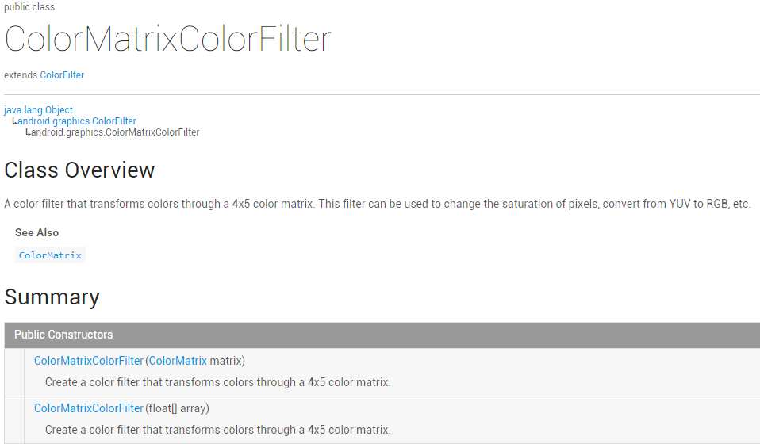
大概说的是：通过一个4 x 5的颜色矩阵来变换颜色，可以修改像素的饱和度，将YUV转换成RGB等！ 而构造方法中的ColorMatrix就是颜色矩阵，也是我们学习的核心，下面听我一一道来！
PS：ColorMatrix的API文档
二、相关常识的普及：
RGBA模型：
RGBA不知道你听过没，黄绿蓝知道了吧，光的三基色，而RAGB则是在此的基础上多了一个透明度！ R(Red红色)，G(Green绿色)，B(Blue蓝色)，A(Alpha透明度)；另外要和颜料的三 原色区分开来哦，最明显的区别就是颜料的三原色中用黄色替换了光三基色中的绿色！知道下就好， 有兴趣的可自行百度~
一些名词：
- 色调/色相——物体传递的颜色
- 饱和度——颜色的纯度，从0(灰)到100%(饱和)来进行描述
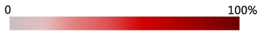
- 亮度/明度——颜色的相对明暗程度
三、ColorMatrix的解读
如题，颜色矩阵(4 * 5)，我们可以修改矩阵中的值，来实现黑白照，泛黄老照片，高对比度等效果！ 手撕颜色矩阵解释图如下：
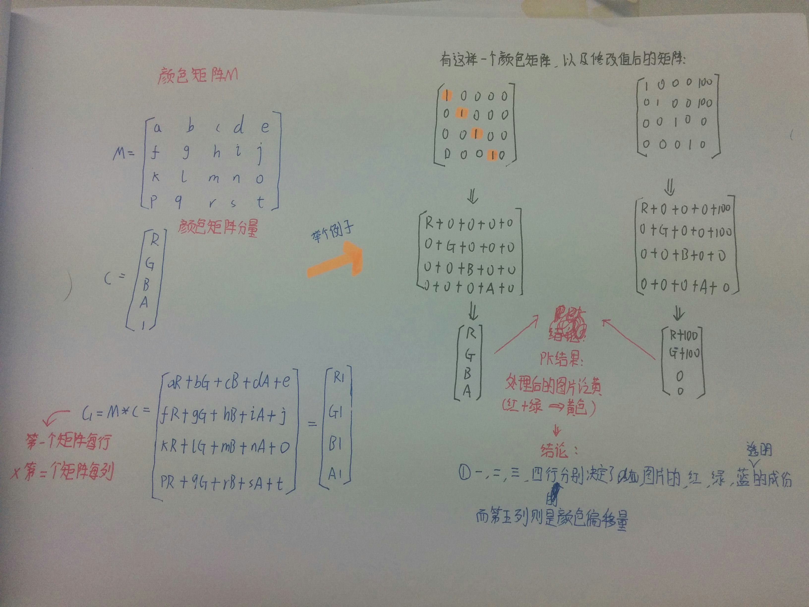
不知道你看懂上图没，如果你学过高数的话，肯定对此很熟悉，无非是矩阵的叉乘而已，没学过也没关系 计算方法就是右下角那个，拿颜色矩阵的每一行来 * 颜色矩阵分量的每一列！
很典型的一个例子，处理前后的结果比较，我们还可以让某个颜色值 * 一个常数，比如让第三行(蓝) 乘以2，效果就变成泛蓝色了，当然，我们肯定要写代码来验证验证上面的结果！
四、写代码来验证ColorMatrix所起的作用
这里来写烂大街的例子，一个ImageView，4 * 5个EditText，一个重置按钮和一个生成按钮， 我们来看下效果图：
依次是原图，泛黄，泛绿，泛红，高对比度，色相变换，以及黄色复古
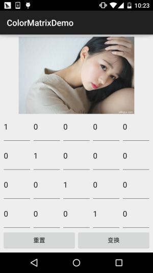
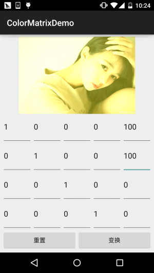
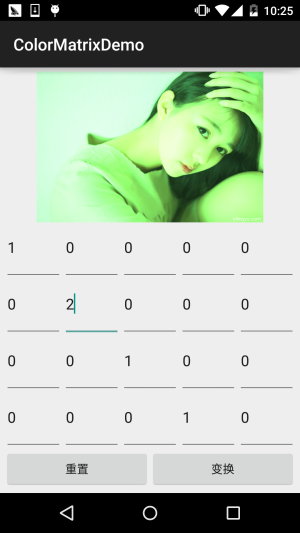
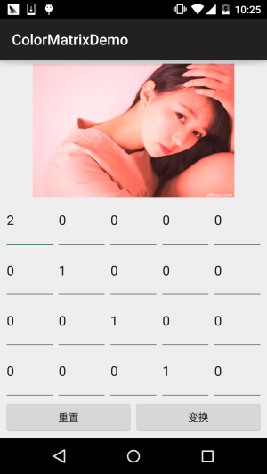
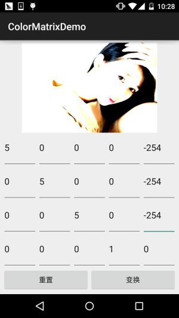
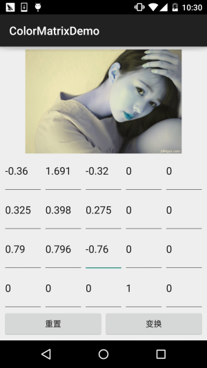
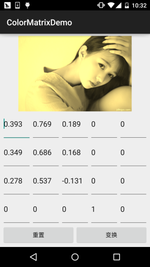
接下来我们来写代码，完成上述的效果： 代码实现：
首先是布局文件activity_main.xml：
<?xml version="1.0" encoding="utf-8"?>
<LinearLayout xmlns:android="http://schemas.android.com/apk/res/android"
android:layout_width="match_parent"
android:layout_height="match_parent"
android:orientation="vertical"
android:padding="5dp">
<ImageView
android:id="@+id/img_show"
android:layout_width="match_parent"
android:layout_height="0dp"
android:layout_weight="2" />
<GridLayout
android:id="@+id/gp_matrix"
android:layout_width="match_parent"
android:layout_height="0dp"
android:layout_weight="3"
android:columnCount="5"
android:rowCount="4"></GridLayout>
<LinearLayout
android:layout_width="match_parent"
android:layout_height="wrap_content"
android:orientation="horizontal">
<Button
android:id="@+id/btn_reset"
android:layout_width="0dp"
android:layout_height="wrap_content"
android:layout_weight="1"
android:text="重置" />
<Button
android:id="@+id/btn_Change"
android:layout_width="0dp"
android:layout_height="wrap_content"
android:layout_weight="1"
android:text="变换" />
</LinearLayout>
</LinearLayout>
接着是MainActivity.java：
public class MainActivity extends AppCompatActivity implements View.OnClickListener {
private ImageView img_show;
private GridLayout gp_matrix;
private Button btn_reset;
private Button btn_Change;
private Bitmap mBitmap;
private int mEtWidth, mEtHeight;
private EditText[] mEts = new EditText[20];
private float[] mColorMatrix = new float[20];
private Context mContext;
@Override
protected void onCreate(Bundle savedInstanceState) {
super.onCreate(savedInstanceState);
setContentView(R.layout.activity_main);
mContext = MainActivity.this;
bindViews();
gp_matrix.post(new Runnable() {
@Override
public void run() {
mEtWidth = gp_matrix.getWidth() / 5;
mEtHeight = gp_matrix.getHeight() / 4;
//添加5 * 4个EditText
for (int i = 0; i < 20; i++) {
EditText editText = new EditText(mContext);
mEts[i] = editText;
gp_matrix.addView(editText, mEtWidth, mEtHeight);
}
initMatrix();
}
});
}
private void bindViews() {
img_show = (ImageView) findViewById(R.id.img_show);
gp_matrix = (GridLayout) findViewById(R.id.gp_matrix);
btn_reset = (Button) findViewById(R.id.btn_reset);
btn_Change = (Button) findViewById(R.id.btn_Change);
mBitmap = BitmapFactory.decodeResource(getResources(), R.mipmap.img_meizi);
img_show.setImageBitmap(mBitmap);
btn_reset.setOnClickListener(this);
btn_Change.setOnClickListener(this);
}
//定义一个初始化颜色矩阵的方法
private void initMatrix() {
for (int i = 0; i < 20; i++) {
if (i % 6 == 0) {
mEts[i].setText(String.valueOf(1));
} else {
mEts[i].setText(String.valueOf(0));
}
}
}
//定义一个获取矩阵值得方法
private void getMatrix() {
for (int i = 0; i < 20; i++) {
mColorMatrix[i] = Float.valueOf(mEts[i].getText().toString());
}
}
//根据颜色矩阵的值来处理图片
private void setImageMatrix() {
Bitmap bmp = Bitmap.createBitmap(mBitmap.getWidth(), mBitmap.getHeight(),
Bitmap.Config.ARGB_8888);
android.graphics.ColorMatrix colorMatrix = new android.graphics.ColorMatrix();
colorMatrix.set(mColorMatrix);
Canvas canvas = new Canvas(bmp);
Paint paint = new Paint(Paint.ANTI_ALIAS_FLAG);
paint.setColorFilter(new ColorMatrixColorFilter(colorMatrix));
canvas.drawBitmap(mBitmap, 0, 0, paint);
img_show.setImageBitmap(bmp);
}
@Override
public void onClick(View v) {
switch (v.getId()) {
case R.id.btn_Change:
getMatrix();
setImageMatrix();
break;
case R.id.btn_reset:
initMatrix();
getMatrix();
setImageMatrix();
break;
}
}
}
代码非常的简单，就加载布局，然后往GridLayout里面塞 5 * 4 个EditText，这里用 post()方法是为了保证GridLayout加载完毕后才去获取长宽，不然在获取GridLayout长 宽的时候可是获取不到值的！接着定义了三个方法，初始矩阵，获取矩阵值，以及根据 矩阵值来处理图片~是不是很简单咧~
不过到这里你可能有一点疑问：
" 难道处理图像我们只能这样修改颜色矩阵么？次次都这样肯定很麻烦，谁会去记矩阵 里的应该填的值？有没有简单一点处理图片的方法？ "
答：肯定是有的，我们可以看回文档，我们可以发现几个很常用的方法： setRotate(int axis, float degrees)：设置色调
setSaturation(float sat)：设置饱和度
setScale(float rScale, float gScale, float bScale, float aScale)：设置亮度
下面我们写个例子来试下这个三个方法！
五、使用ColorMatrix的三个方法处理图像
运行效果图：
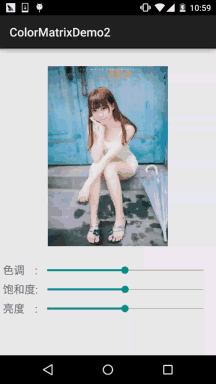
代码实现：
首先我们来编写一个图片处理的工具类，我们传入Bitmap，色相，饱和度以及亮度，处理后，返回 处理后的图片：ImageHelper.java：
/**
* Created by Jay on 2015/10/28 0028.
*/
public class ImageHelper {
/**
* 该方法用来处理图像，根据色调，饱和度，亮度来调节
*
* @param bm:要处理的图像
* @param hue:色调
* @param saturation:饱和度
* @param lum:亮度
*
*/
public static Bitmap handleImageEffect(Bitmap bm, float hue, float saturation, float lum) {
Bitmap bmp = Bitmap.createBitmap(bm.getWidth(), bm.getHeight(), Bitmap.Config.ARGB_8888);
Canvas canvas = new Canvas(bmp);
Paint paint = new Paint(Paint.ANTI_ALIAS_FLAG);
ColorMatrix hueMatrix = new ColorMatrix();
hueMatrix.setRotate(0, hue); //0代表R，红色
hueMatrix.setRotate(1, hue); //1代表G，绿色
hueMatrix.setRotate(2, hue); //2代表B，蓝色
ColorMatrix saturationMatrix = new ColorMatrix();
saturationMatrix.setSaturation(saturation);
ColorMatrix lumMatrix = new ColorMatrix();
lumMatrix.setScale(lum, lum, lum, 1);
ColorMatrix imageMatrix = new ColorMatrix();
imageMatrix.postConcat(hueMatrix);
imageMatrix.postConcat(saturationMatrix);
imageMatrix.postConcat(lumMatrix);
paint.setColorFilter(new ColorMatrixColorFilter(imageMatrix));
canvas.drawBitmap(bm, 0, 0, paint);
return bmp;
}
}
接下来我们把布局也撸出来，activity_main.xml：
<?xml version="1.0" encoding="utf-8"?>
<RelativeLayout xmlns:android="http://schemas.android.com/apk/res/android"
android:layout_width="match_parent"
android:layout_height="match_parent"
android:orientation="vertical"
android:padding="5dp">
<ImageView
android:id="@+id/img_meizi"
android:layout_width="300dp"
android:layout_height="300dp"
android:layout_centerHorizontal="true"
android:layout_marginBottom="24dp"
android:layout_marginTop="24dp" />
<TextView
android:id="@+id/txt_hue"
android:layout_width="wrap_content"
android:layout_height="32dp"
android:layout_below="@id/img_meizi"
android:gravity="center"
android:text="色调 :"
android:textSize="18sp" />
<SeekBar
android:id="@+id/sb_hue"
android:layout_width="match_parent"
android:layout_height="32dp"
android:layout_below="@id/img_meizi"
android:layout_toRightOf="@id/txt_hue" />
<TextView
android:id="@+id/txt_saturation"
android:layout_width="wrap_content"
android:layout_height="32dp"
android:layout_below="@id/txt_hue"
android:gravity="center"
android:text="饱和度:"
android:textSize="18sp" />
<SeekBar
android:id="@+id/sb_saturation"
android:layout_width="match_parent"
android:layout_height="32dp"
android:layout_below="@id/sb_hue"
android:layout_toRightOf="@id/txt_saturation" />
<TextView
android:id="@+id/txt_lun"
android:layout_width="wrap_content"
android:layout_height="32dp"
android:layout_below="@id/txt_saturation"
android:gravity="center"
android:text="亮度 :"
android:textSize="18sp" />
<SeekBar
android:id="@+id/sb_lum"
android:layout_width="match_parent"
android:layout_height="32dp"
android:layout_below="@id/sb_saturation"
android:layout_toRightOf="@id/txt_lun" />
</RelativeLayout>
最后是我们的MainActivity.java：
public class MainActivity extends AppCompatActivity implements SeekBar.OnSeekBarChangeListener{
private ImageView img_meizi;
private SeekBar sb_hue;
private SeekBar sb_saturation;
private SeekBar sb_lum;
private final static int MAX_VALUE = 255;
private final static int MID_VALUE = 127;
private float mHue = 0.0f;
private float mStauration = 1.0f;
private float mLum = 1.0f;
private Bitmap mBitmap;
@Override
protected void onCreate(Bundle savedInstanceState) {
super.onCreate(savedInstanceState);
setContentView(R.layout.activity_main);
mBitmap = BitmapFactory.decodeResource(getResources(), R.mipmap.img_meizi);
bindViews();
}
private void bindViews() {
img_meizi = (ImageView) findViewById(R.id.img_meizi);
sb_hue = (SeekBar) findViewById(R.id.sb_hue);
sb_saturation = (SeekBar) findViewById(R.id.sb_saturation);
sb_lum = (SeekBar) findViewById(R.id.sb_lum);
img_meizi.setImageBitmap(mBitmap);
sb_hue.setMax(MAX_VALUE);
sb_hue.setProgress(MID_VALUE);
sb_saturation.setMax(MAX_VALUE);
sb_saturation.setProgress(MID_VALUE);
sb_lum.setMax(MAX_VALUE);
sb_lum.setProgress(MID_VALUE);
sb_hue.setOnSeekBarChangeListener(this);
sb_saturation.setOnSeekBarChangeListener(this);
sb_lum.setOnSeekBarChangeListener(this);
}
@Override
public void onProgressChanged(SeekBar seekBar, int progress, boolean fromUser) {
switch (seekBar.getId()) {
case R.id.sb_hue:
mHue = (progress - MID_VALUE) * 1.0F / MID_VALUE * 180;
break;
case R.id.sb_saturation:
mStauration = progress * 1.0F / MID_VALUE;
break;
case R.id.sb_lum:
mLum = progress * 1.0F / MID_VALUE;
break;
}
img_meizi.setImageBitmap(ImageHelper.handleImageEffect(mBitmap, mHue, mStauration, mLum));
}
@Override
public void onStartTrackingTouch(SeekBar seekBar) {}
@Override
public void onStopTrackingTouch(SeekBar seekBar) {}
}
代码同样很简单，这里就不讲解了~
六、本节代码示例下载：
七、本节小结：
好的，本节跟大家介绍了ColorFilter中的第一个ColorMatrixColorFilter，颜色矩阵过滤器 其实核心还是ColorMatrix，我们通过该类处理图片可以自己设置4*5矩阵的值，又或者直接调用 ColorMatrix给我们提供的设置色调，饱和度，亮度的方法！图像处理无非就这样，还有一种是修改 像素点形式的，后面也会讲，本节内容参考自——医生(徐宜生)的慕客网视频： Android图像处理-打造美图秀秀从它开始，不想看文字的可以看视频，讲得还是蛮赞的~